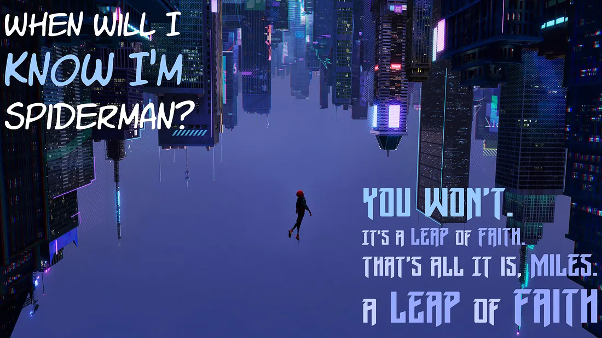

မင်းက မင်းရည်မှန်းချက်ပြည့်တာကိုပဲ လိုချင်တာ
ပြည့်အောင် ဖြည့်ချင်တာမဟုတ်ဘူး

ဒီစကားက ကျနော့်ကို
တော်တော်လေး အထိနာစေတယ်။
အိမ်မက်တွေ၊ Goals တွေ၊
ပန်းတိုင်တွေအကြောင်းပြောကြတဲ့အခါ
အဲ့ဒီအရာကို ရသွားရင်၊
ဒီခရီးကို ရောက်သွားရင်
“ဘယ်လိုဖြစ်သွားမှာ”
“ဘယ်လို ခံစားရမှာ” ဆိုတဲ့အပိုင်းကိုပဲ
ပြောကြတယ်။
ဒီလိုပြည့်သွားလိမ့်မယ်ဆိုတဲ့ အခြေအနေလေးကို
တစိမ့်စိမ့်တွေးပြီး ယစ်မူးနေရတာကို
အရသာရှိတာ …
ဘာလို့လဲဆိုတော့ —
တွေးရတာ၊ စိတ်ကူးယဉ်ရတာ၊ အိပ်မက်မက်ရတာက
ပင်မှမပင်ပန်းတာ
ဘာအလုပ်မှ လုပ်မပြတော့
ကိုယ့်ကို ဝေဖန်တိုက်ခိုက်မယ့်သူမရှိဘူး။
လူတွေရှေ့ ကြိုးစားပြနေရတာမဟုတ်တော့
ကိုယ့်ကို ကန့်လန့်တိုက်နေမယ့်သူတွေမရှိဘူး။
ဘာမှ မလုပ်တော့ အမှားဆိုတာကလည်း
ရှိလာမှာမဟုတ်ဘူး။
အဲ့တော့ ကိုယ်က အမြဲမှန်နေပါတယ်ဆိုတဲ့
ခံစားချက်လည်းရတယ်။
ပြီးတော့ ပိုကောင်းတာတစ်ခုက
ကြိုးစားပြတဲ့လူတွေတွေ့ရင်လည်း
ကိုယ်လည်း ဒါကို လုပ်ဖို့လုပ်နေပါတယ်ဆိုတဲ့
အထာဖမ်းလို့ရတယ်။
We are on the same Goal ပေါ့လေ။
ဒါပေမယ့် ကျနော်တို့ သိပါတယ်။
ဟန်လုပ်နေတဲ့ ကန့်လန့်ကာတွေရဲ့
နောက်ကွယ်မှာ ဘယ်လိုအရာတွေကို
ကျနော်တို့ ဖုံးထားတယ်ဆိုတာ
ကျနော်တို့ သိပါတယ် ….
မနက်ဖြန်စမယ်ပြောပေမယ့်
မနက်ဖြန်လည်း မစဖြစ်သေးဘူးဆိုတာ
ကျနော်တို့ သိပါတယ်။
ဒီအလုပ်တွေပြီးရင် ပြောပေမယ့်
တကယ်မစဖြစ်သေးဖူးဆိုတာလည်း
ကျနော်တို့ သိပါတယ်။
တကယ်က ကြောက်နေတာ
Safe ဖြစ်တဲ့ Comfort ဖြစ်တဲ့
တည်ငြိမ်နေပြီးသား အခြေအနေတစ်ခုကနေ
ရုန်းထွက်ရမှာကိုကြောက်နေတာ ….
တစ်စုံတစ်ခု တစ်စုံယောက်ယောက်
အခြေအနေ တစ်ခုခုရဲ့
တွန်းပေးအားကို ကျနော်တို့
စောင့်နေတယ်။
ခါးသီးတဲ့ အမှန်တရားက ဘာလဲသိလား?
အဲ့ဒါက ဘယ်တော့မှ
ဖြစ်လာမှာမဟုတ်ဘူး
ကိုယ် ဘယ်တော့ အသင့်ဖြစ်မှာလဲ
ကိုယ် ဘယ်တော့ အမှားအယွင်း
အထစ်အငေါ့မရှိဘဲ စနိုင်မလဲဆိုတာ
ကျနော်တို့မသိဘူး ….
ချောက်ကမ်းပါးရဲ့ အစွန်းမှာရောက်နေပြီးတော့
တစ်ဖက်ကို ခုန်မကူးရဲတဲ့ခံစားချက်မျိုး။
ခုန်ရမှာလည်း သိတယ်။
ခုန်ဖို့ လိုအပ်နေတာလည်း သိတယ်။
ဒါပေမယ့်ကြောက်နေတာ။
လူတွေကို ကြောက်တယ်။
အဆင်မပြေမှာစိုးတဲ့အတွေးနဲ့ စိတ်ဖိစီးတယ်။
မဖြစ်လာမှာ စိုးရိမ်တယ်။
ကျရှုံးသွားမှာ စိတ်ပူတယ်။
တကယ်တမ်းတော့
အဲ့ဒီခံစားချက်တွေဟာ
ကျနော်တို့ရဲ့ လူသားဆန်မှုကို
ဖော်ပြနေတဲ့ လက္ခဏာတွေပဲ။
ကျနော်တို့ရဲ့ Survival Mechanism အရ
ကျ နော်တို့ရဲ့ ဦးနှောက်ဟာ
ကျနော်တို့အသက်ရှင်သန်ဖို့အတွက်
ဒီလူအုပ်ကြီးထဲမှာ ရှိစေချင်တယ်။
ဒီမျိုးနွယ်စုရဲ့ အပယ်ခံဘဝကို
မရောက်စေချင်ဘူး။
ဒါကြောင့် တစ်ခုခုဆို ကိုယ့်မိသားစု၊
သူငယ်ချင်းနဲ့ တခြားလူတွေ
ဘယ်လိုထင်မလဲဆိုတဲ့ အတွေးတွေက
အရင်ဝင်လာတာ။
ဒါပေမယ့် ...
အဲ့လိုခံစားနေပြီဆိုရင်
အဲ့ဒါဟာ “စလို့ရပြီ” ဆိုတဲ့
လက္ခဏာပဲ
Spider-Man: Into the Spider-Verse ထဲက
dialogue လေးကိုတွေးမိတယ်။

“ကျနော် ဘယ်အချိန်မှာ အဆင့်သင့်ဖြစ်ပြီဆိုတာကို
သိနိုင်မလဲ?”
“မင်း သိမှာမဟုတ်ဘူး Miles ….” တဲ့။
“ခုန်ဖို့ကြောက်နေတဲ့အချိန်မှာ
မင်းကိုမင်း ယုံပြီး
အဲ့ဒီကြောက်စိတ်နဲ့ အတူခုန်ရမယ့်အချိန်ပဲ”တဲ့။
အဲ့ဒါကို leap of faith လို့ခေါ်တယ်။
May my words touch your soul.
Haru
1% Better Every Day
ဒါမျိုးထပ်ဖတ်ချင်သေးရင် ...
VPN ချိတ်ပြီး ကျနော့် FB page မှာလည်း ထပ်ဖတ်လို့ရပါတယ် 🥳
💬 Comments
Anonymous comments allowed. Be kind. ❤️